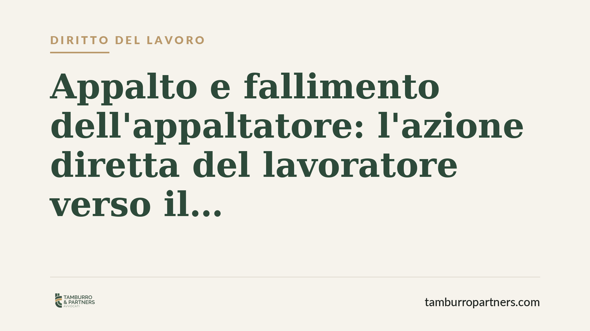

Appalto e fallimento dell'appaltatore: il lavoratore può agire verso il committente
Quando l'impresa appaltatrice fallisce, i dipendenti rischiano di restare senza stipendio. L'art. 1676 del codice civile offre una via alternativa: agire direttamente contro il committente per le somme che questi deve ancora all'appaltatore. Una recente pronuncia della Corte d'Appello di Catania torna sul tema e ne chiarisce i confini applicativi.

Il fatto
Un gruppo di lavoratori impiegati in un appalto si è trovato con retribuzioni arretrate non pagate a seguito del fallimento dell'impresa appaltatrice (la società che aveva assunto l'esecuzione dei lavori). Invece di limitarsi a insinuarsi nel passivo fallimentare — procedura spesso lunga e dall'esito incerto — hanno chiesto il pagamento direttamente al committente, cioè al soggetto che aveva commissionato l'opera.
La Corte d'Appello di Catania, sezione lavoro, con pronuncia del giugno 2026 ha confermato la percorribilità di questa strada, ribadendo i presupposti dell'azione diretta prevista dal codice civile.
Inquadramento normativo
La norma di riferimento è l'art. 1676 cod. civ., secondo cui coloro che, alle dipendenze dell'appaltatore, hanno dato la loro attività per eseguire l'opera o prestare il servizio possono proporre azione diretta contro il committente per conseguire quanto è loro dovuto, fino alla concorrenza del debito che il committente ha verso l'appaltatore nel momento in cui propongono la domanda.
Due precisazioni tecniche sono decisive. La prima: si tratta di un'*azione diretta*, cioè di un diritto proprio del lavoratore che agisce in nome e per conto proprio, non di una surrogazione. La seconda: il limite è duplice. Il lavoratore può ottenere solo ciò che gli spetta a titolo di retribuzione, e comunque non oltre l'importo che il committente non ha ancora corrisposto all'appaltatore. Se il committente ha già saldato integralmente l'appaltatore, l'azione resta priva di oggetto.
Il fallimento dell'appaltatore non paralizza questo strumento. La giurisprudenza consolidata riconosce che l'azione ex art. 1676 c.c. può essere esercitata anche a fronte dell'insolvenza dell'appaltatore, proprio perché il credito del lavoratore verso il committente è distinto dalla massa fallimentare.
Implicazioni pratiche
Per il lavoratore inserito in un appalto, la pronuncia conferma l'esistenza di un canale di recupero alternativo e potenzialmente più rapido rispetto all'insinuazione al passivo. Non si tratta però di una garanzia automatica: l'esito dipende dall'esistenza, al momento della domanda, di un debito residuo del committente verso l'appaltatore.
Per il committente il messaggio è speculare. Chi affida lavori in appalto deve considerare che il pagamento all'appaltatore non lo mette al riparo dalle pretese dei dipendenti di quest'ultimo, se e nella misura in cui restino somme da versare. Diventa quindi opportuno monitorare la regolarità retributiva lungo la filiera dell'appalto.
Va tenuto presente il coordinamento con il regime della *responsabilità solidale* previsto dall'art. 29, comma 2, del d.lgs. n. 276/2003, che opera su presupposti diversi e con un perimetro temporale proprio (i due anni dalla cessazione dell'appalto). L'azione diretta dell'art. 1676 c.c. e la responsabilità solidale sono strumenti distinti, cumulabili ma non sovrapponibili: la scelta dipende dalla situazione concreta.
Cosa fare in concreto
- Ricostruite la posizione creditoria: quantificate con precisione le retribuzioni maturate e non percepite, distinguendo il periodo di riferimento e le voci dovute.
- Verificate lo stato dei pagamenti nell'appalto: l'azione ex art. 1676 c.c. presuppone che il committente sia ancora debitore verso l'appaltatore. Acquisite ogni elemento utile sui rapporti economici in essere.
- Valutate il concorso con la responsabilità solidale: verificate se ricorrono i presupposti dell'art. 29 d.lgs. 276/2003 e i relativi termini, per scegliere lo strumento più efficace.
- Agite con tempestività: nel fallimento le tempistiche incidono. Coordinate l'eventuale insinuazione al passivo con l'azione verso il committente per non pregiudicare alcuna via.
- Documentate la richiesta al committente in forma scritta, così da fissare il momento rilevante ai fini del limite del debito residuo.
La concreta praticabilità dell'azione va sempre valutata sul singolo caso, tenendo conto dello stato dell'appalto e della procedura concorsuale.
Disclaimer
Contributo informativo a cura di Tamburro & Partners - Avv. Giuseppe Tamburro. Non costituisce parere legale.
Ogni storia di lavoro ha i suoi tempi.
Se gestisci HR e vuoi un confronto su contenzioso, ispezioni o licenziamenti, scrivi allo studio. Ti rispondiamo entro un giorno lavorativo.